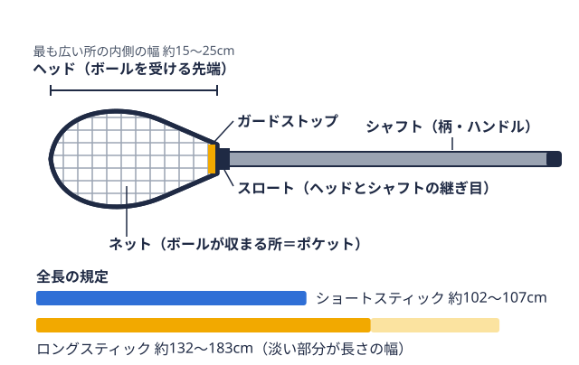

進路 2026-09-30
大学ラクロスを始める前にやっておくこと5つ｜合格後〜新歓〜入部の流れと確認リスト
はじめての方向け
この記事の内容
合格から入部までの流れ「大学でラクロスを始めたいけれど、入学までに何を準備すればいいのだろう」と迷っている人に向けて、合格が決まってから入部を決めるまでの準備を時系列で整理します。
結論から言うと、入学前にやっておきたいのは、①男子・女子どちらのラクロスかを知る、②進学先のリーグと部の情報（SNSを含む）を集める、③部とサークルの違いを知る、④自分の選ぶ基準を決める、⑤入部までの流れを確認する、の5つです。用具の購入は、入部後に部の説明を受けてからでも遅くありません。
合格から入部までの流れ
日本ラクロス協会（JLA）は大学新入生向けのメッセージで「ラクロスは、ほとんどの人が大学から始めるスポーツです」と伝えています（出典: JLA「【歓迎】2025年 大学新入生のみなさんへ」）。経験の有無よりも、入部前にどれだけ情報を集め、複数の部を比べられたかが、入部後の満足度に関わりやすい競技です。
時期ごとにやることの目安は次のとおりです。新歓の時期や形式は大学によって異なるため、進学先の部の案内を確認してください。
| 時期 | やること |
|---|---|
| 合格〜入学前 | 進学先のラクロス部のSNSをフォローする、リーグ・活動形態を調べる、選ぶ基準を決める、ルールを読む・試合を見る |
| 入学〜新歓期 | 新歓イベントや体験練習に参加する、複数の部・回を見比べる、練習時間・費用・用具・指導体制を聞く |
| 入部を決めるとき | 1年間の費用の総額と練習の時間帯を確認し、授業・アルバイトとの両立を考えて決める |
| 入部後 | 先輩や指導者の説明を聞いてから用具をそろえる |
大学ラクロスの1年の流れ（新歓・リーグ戦・新人戦の時期）は大学ラクロスの年間スケジュールで整理しています。まだ受験前の高校生の方は、大学でラクロスを始めたい高校生が受験期までにできる5つの準備もあわせてご覧ください。
入学前にやっておきたい5つの準備
1. 男子・女子のどちらのラクロスかをイメージする
ラクロスは男子と女子でルールも用具も異なります。防具の有無やコンタクトの考え方まで違うため、まずは違いを知っておくと部選びがぶれません。詳しくは男子ラクロスと女子ラクロスはこんなに違うをご覧ください。
2. 進学先のリーグと部の情報（SNSを含む）を集める
大学ラクロスは全国7地区・男女で14のリーグが運営されており、地区によって部・ブロックの構成が異なります。進学先の大学がどの地区・どのカテゴリーで戦っているかを知っておくと、入学後の活動イメージがつかみやすくなります。仕組みは大学ラクロスの「全国7地区」とは？で解説しています。
あわせて、進学先のラクロス部のInstagramやXをフォローしておくと、新歓の日程や練習の様子を入学前から追えます。筑波大学女子ラクロス部の公式ブログでは、ある部員が、合格が決まってすぐ部のInstagramを探してフォローし、入学後に新歓イベントへ何度か参加してから入部を決めた経緯を書いています（出典: 筑波大学女子ラクロス部 公式ブログ「25新歓ブログ」）。
部によっては、競技の紹介だけでなく生活面の情報も発信しています。ツナカレメディアが取材した武蔵大学男子ラクロス部では、新歓期にInstagramとXで毎日発信し、一人暮らしの部員へのインタビューや大学周辺の飲食店紹介も載せて、部の雰囲気が伝わるようにしていたと紹介されています（出典: ツナカレメディア 2026年5月27日掲載の取材記事）。SNSは、練習の時間帯や部の雰囲気を新歓前に知る手がかりになります。
3. 部・サークルなど活動形態の違いを知る
大学によって、体育会として活動する部と、サークル形式で活動するチームが併存している場合があります。練習頻度や公式戦への参加方法が異なるため、目的に合う形態を選ぶことが大切です。大学ラクロスは「部活」と「サークル」どちらが多い？も参考にしてください。
4. 部活選びの基準を自分の中で決めておく
新歓期には多くの勧誘を受けます。次のような軸を事前に決めておくと、流されずに比較できます。
- 競技にどの程度の時間を使いたいか（学業・アルバイトとの両立を含む）
- 目指す目標（リーグ戦での上位進出、まず楽しみたいなど）
- 未経験者への指導体制があるか
- 4年間続けやすい費用感か
判断のポイントは大学でラクロスを始めるには？ 部活選びで見るべき5つのポイントで詳しく紹介しています。
5. 経験の有無に関わらず、入部の流れを確認しておく
部によっては、入部にあたって見学・体験や面談が設けられていることがあります。入部までの流れは大学ラクロス部に「セレクション」はある？にまとめています。
新歓期に確認しておきたいこと
新歓で見るべきなのは、雰囲気の良さだけではありません。入部後に「思っていたのと違った」とならないよう、次の点は現役部員に聞いておくと安心です。
| 確認項目 | 聞き方の例 |
|---|---|
| 練習頻度・時間帯 | 週に何日、何時から何時まで練習していますか（朝練か夕方か） |
| 練習場所 | どのグラウンドで練習していますか。キャンパスからどう移動しますか |
| 授業・就活との両立 | 授業や試験期間中の練習はどうなっていますか |
| 費用の内訳 | 部費のほか、遠征や合宿でかかる費用はありますか |
| 用具の準備 | スティックボールを運ぶ・パスする・シュートするために使う、先に網が付いた棒状の道具。ボールは手で直接持てない。  用語辞典で見るや防具は入部前に自分で買う必要がありますか |
| 未経験者の育成 | 初心者向けの練習メニューや教える体制はありますか |
練習の時間帯と育成体制は部によって大きく異なります。たとえば先の武蔵大学男子ラクロス部の取材記事では、平日朝7時からの練習を週5回行い、未経験の1年生には卒業生3名が指導する「フレッシュマンコーチ」制度があると紹介されています。こうした具体的な仕組みを部ごとに聞いて比べると、違いが見えやすくなります。
新歓は複数回・複数の部を回る
1回の新歓だけで決めず、同じ部のイベントに何度か参加したり、別の部・サークルも見たりしてから決めると、比べる材料が増えます。先の筑波大学女子ラクロス部の部員ブログでも、新歓で道具に触れたり朝練を見学したりして、楽しい面以外も確認できたことが決め手の一つとして挙げられています。体験練習や朝練の見学ができる場合は、実際の練習の時間帯と雰囲気を一度見ておくと判断しやすくなります。
用具は入部を決めてから買う
新歓期にいきなりスティックや防具をそろえる必要はありません。入部後に先輩や指導者から選び方の説明を受けられる部もあるので、まずは新歓で「いつ・何を買えばよいか」を聞いておきましょう。先に買ってしまうと、ポジションや部の方針に合わないものを選んでしまうことがあります。基準を知っておきたい場合は、ラクロススティックの値段は？やラクロス防具の選び方を目安にしてください。
参考までに、ラクロスの道具の中心になる「クロス（スティック）」は、先端の枠と網（ヘッドクロスの先端にある、ボールを受ける枠の部分。内側に網が張られている。用語辞典で見る）と、持ち手の柄（シャフトクロスの柄（持ち手）にあたる長い棒の部分。先端のヘッド（枠）につながっている。用語辞典で見る）でできています。
費用は「4年間トータル」で見る
部費は月額や年額で示されることが多いものの、実際には遠征・合宿・ユニフォーム代などが別途かかる場合があります。入部を決める前に、1年間でかかるおおよその総額を聞いておくと安心です。部費の考え方はラクロス部の部費はいくら？でも整理しています。
入学までの時間にできる基礎づくり
合格から入学までの期間には、競技そのものを始めなくてもできることがあります。
- 観戦してみる：試合を見ておくと、競技のイメージと用語に慣れられます。初めての方は大学ラクロスを初めて観戦するには？が参考になります。
- ルールを読んでおく：ラクロスのルール完全ガイドで基本を押さえておくと、練習の説明が理解しやすくなります。
- 体力づくり：ランニングや体幹トレーニングなど、無理のない範囲で体を動かしておくと、入部直後の練習に入りやすくなります。
よくある質問
未経験でも大学のラクロス部に入れますか？
JLAが「ほとんどの人が大学から始めるスポーツ」と案内しているとおり、未経験から始める人が多い競技です。入部の条件や流れは部によって異なるため、見学・体験や面談の有無は新歓で確認してください。
入学前に練習しておいたほうがいいですか？
スティックの練習は入部後に教わる前提の部もあり、入学前に技術を身につけておく必要はありません。気になる場合は、ルールを読む・試合を見る・無理のない範囲で走るなど、用具がなくてもできることから始めると入りやすくなります。
入部はいつまでに決めればいいですか？
締め切りや入部の手続きは大学・部によって異なります。新歓期のうちに、いつまでに返事をすればよいかを部員に聞いておくと、複数の部を落ち着いて比べられます。
用具はいつ買えばいいですか？
入部を決めて、部の説明を受けてから買うのがおすすめです。ポジションによって使うスティックの長さが変わるため、先に買うと合わないものを選んでしまうことがあります。
まとめ
大学ラクロスは、経験がなくても始めやすい一方で、部ごとの違いが大きい競技です。入学前に「男子か女子か」「どんな活動形態か」「何を基準に選ぶか」を整理し、新歓期には練習頻度・費用・育成体制を具体的に確認することが、納得できる部選びにつながります。焦って決めず、複数の部を見比べたうえで、自分に合った4年間を選んでください。
出典
- 日本ラクロス協会（JLA）「【歓迎】2025年 大学新入生のみなさんへ」
- 日本ラクロス協会（JLA）「ラクロスとは？」
- 日本ラクロス協会（JLA）「全国地区公式戦：学生リーグ」
- 筑波大学女子ラクロス部 公式ブログ「25新歓ブログ 〜私の入部理由〜」
- ツナカレメディア「週5回の朝練と毎日のSNS発信。30名の新入生を惹きつけたチームづくりの裏側——武蔵大学男子ラクロス部」（2026年5月27日掲載）
本記事はJLAの公開情報および編集部の取材知見をもとに構成しています。
部活を続けながら、就活も進めたい方へ
体育会の学生のための就活相談です。無料で、メールアドレス・学年・所属の入力だけで始められます。